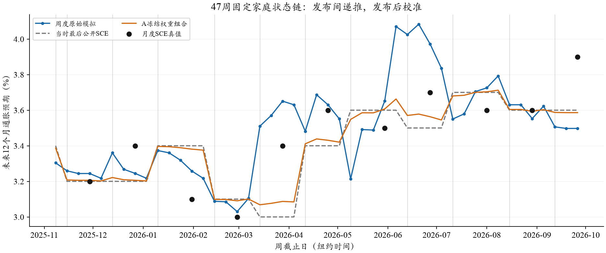
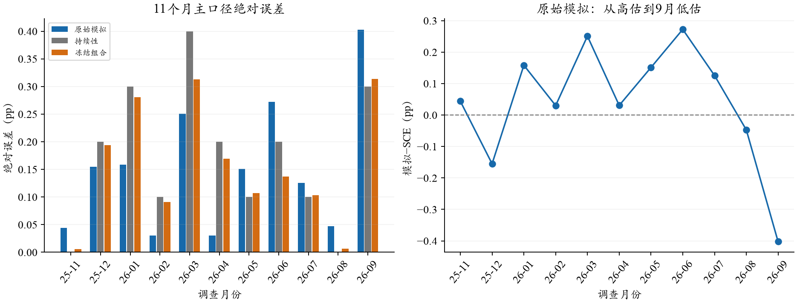
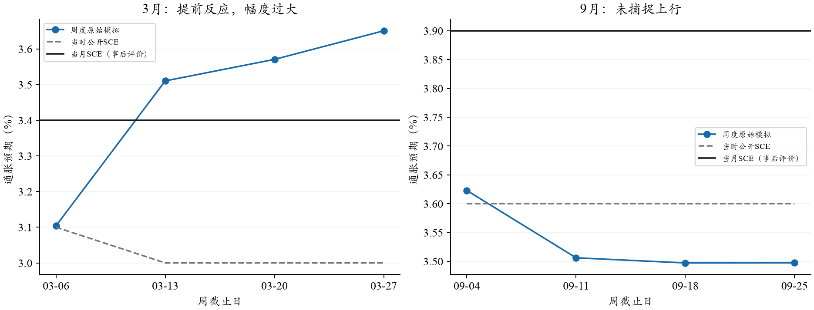
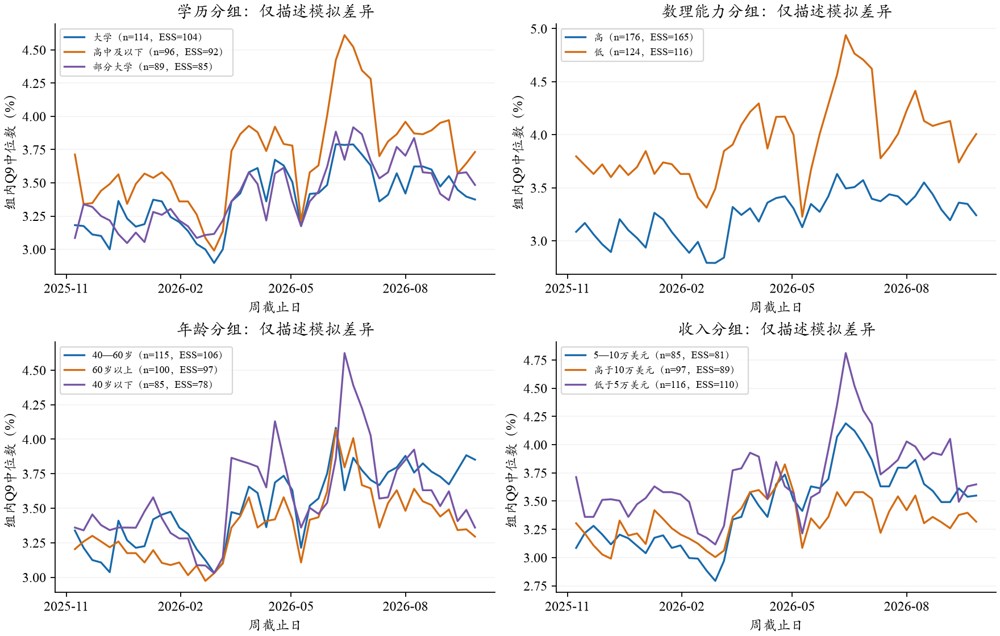

固定同一批300个代理家庭，以2025年1月旧人口框架为基础，从2025年11月7日至2026年9月25日每周五作答。新的历史SCE公开后，用合格匿名联合供体对齐已公开过去指标；两次公开之间传递本人上周模拟Q8/Q9和周期内历史。新闻在当时可见窗口内逐周增加、跨周去重；没有Normal，没有受访者进出。模型为OpenRouter→SiliconFlow FP8的DeepSeek V3.2、温度0.5、关闭思考、JSON直接回答。每月新闻额度4/8/16/32篇、CPI相关度1.5、警示倍数1，参数未因途中结果调整。
逐人Q9十档概率经冻结算法拟合连续密度并取均值，再计算跨家庭的设计加权中位数。真实SCE只有月度值，因此预先约定每个调查月最后一个周点为主预测，11个月等权评价。以下所有方法在相同11个月比较：MAE衡量通常偏差，RMSE对大偏差更敏感，偏差为“预测减真值”。
| 方法 | MAE / pp | RMSE / pp | 偏差 / pp |
|---|---|---|---|
| 原始周度模拟 | 0.1516 | 0.1889 | +0.0417 |
| 当时公开SCE持续性 | 0.1727 | 0.2111 | -0.0636 |
| 同周期合成先验保持不动 | 0.1706 | 0.2132 | -0.0781 |
| A早48月冻结组合 | 0.1564 | 0.1884 | -0.0495 |
| 冻结SCE+CPI | 0.1609 | 0.1979 | -0.0311 |
| 冻结SCE+CPI+模拟 | 0.1502 | 0.1853 | -0.0222 |
同周期合成先验保持不动的MAE为0.1706，加入模型周内更新后降至0.1516，说明结果不只是复制校准锚的机械产物。冻结组合的模拟权重仍为13.3976%，MAE0.1564，略高于原始模拟；RMSE0.1884略低于原始0.1889。不能根据这11个月重新挑选权重。宏观模型加入模拟的MAE由0.1609降至0.1502，但相对原始模拟的差距很小。

11个月中仅5个月优于持续性、6个月落后；平均误差仍然下降，是因为若干改善月节省的绝对误差较大，并非多数月份都赢。逐一删去任意一个月份后，平均MAE差仍为负（约−0.0063至−0.0335pp），说明当前总收益不是由单独一个月决定；这不替代小样本统计显著性检验。
3月捕捉到上行方向但反应过大；4月接近真值；5—7月部分高估；8月接近但落后于恰好不变的持续性。9月是最明显的遗漏：预测3.498%、SCE3.9%，低估0.402pp，高于基线0.3pp。这也使完整11个月MAE从前8个月的0.1365升至0.1516。

| 月份 | SCE / % | 模拟 / % | 原始误差 / pp | 基线误差 / pp | 组合误差 / pp |
|---|---|---|---|---|---|
| 2025-11 | 3.200 | 3.244 | 0.044 | 0.000 | 0.006 |
| 2025-12 | 3.400 | 3.245 | 0.155 | 0.200 | 0.194 |
| 2026-01 | 3.100 | 3.258 | 0.158 | 0.300 | 0.281 |
| 2026-02 | 3.000 | 3.030 | 0.030 | 0.100 | 0.091 |
| 2026-03 | 3.400 | 3.651 | 0.251 | 0.400 | 0.313 |
| 2026-04 | 3.600 | 3.631 | 0.031 | 0.200 | 0.169 |
| 2026-05 | 3.500 | 3.651 | 0.151 | 0.100 | 0.107 |
| 2026-06 | 3.700 | 3.972 | 0.272 | 0.200 | 0.137 |
| 2026-07 | 3.600 | 3.726 | 0.126 | 0.100 | 0.103 |
| 2026-08 | 3.600 | 3.553 | 0.047 | 0.000 | 0.006 |
| 2026-09 | 3.900 | 3.498 | 0.402 | 0.300 | 0.314 |
按调用前固定的±0.1pp容忍带，主点方向正确9/11，其中5个月本来处于平稳带。真实上行有5个月，正确判上行3个月、漏掉12月、9月，其中9月还判成下降；没有出现错误上行警报（0/6个非上行月）。三个“大幅变化月”（绝对月变动≥0.3pp）中，1月、3月方向正确，9月失败。只有3个异常月，不能泛化为异常期稳定有效。

| 预定评分点 | 原始MAE / pp | 固定组合MAE / pp |
|---|---|---|
| 每月最后周点（主） | 0.1516 | 0.1564 |
| 至少提前14天 | 0.1518 | 0.1540 |
| 至少提前21天 | 0.1323 | 0.1560 |
至少21天面板的原始MAE0.1323较低，但三个面板复用同11个月，不能当成三次独立验证，也不以更好结果替换月末主指标。月末周点距离目标发布7—13天。这里只能说明特定回顾性样本具有一定提前信息，尚不能证明越早预测越好。
下表统一使用2025年12月至2026年9月的10个月，排除月度自主递推复用的共同首月，持续性MAE为0.1900。不同方案的人口框架、新闻增量、观察时点及初始化方式不全相同，因此是描述性对照，不能把差距全归因于“按周递推”或“发布后校准”。
| 方案（相同后10个月） | 原始MAE / pp | 固定组合MAE / pp |
|---|---|---|
| 独立逐月B | 0.3820 | 0.1585 |
| 月度自主递推 | 0.3058 | 0.1827 |
| 本次周度发布后校准 | 0.1623 | 0.1715 |
周度原始序列比旧月度自主链更接近SCE，并未呈现相同的持续单向高估；但这不是没有误差累积的证明，重置、环境与更新频率同时变化。原独立逐月B的组合指标仍好于本次周度组合，不存在“周度所有指标全面优胜”。可以将周度作为高频观测与更新节奏的拓展，而非替代所有主线结果。

跨人IQR、标准差与Q8仅作模拟结构描述。300户反复47周不等于14,100个独立居民；在缺少真人周度微观资料时，不计算W1准确性或个人预测命中率。新闻和模型的历史文本、知识边界沿原协议保留，因此仍称回顾性时点模拟，不称当时实际封存的事前预测。
14,100主请求＋28次一次补跑＝14,128物理尝试，47周均封存，未发送和未知在途均为0。原额度403已经通过绑定原记录的一次补跑修复；没有放宽所有403。实报费用$8.9186，未知费用预留$0.0904，计及预留$9.0091，低于原$15上限。主批与补批、前后段费用只累计一次。
Q8与Q9各只有2个户周在一次补跑后仍保留本人旧字段，占14,100户周约0.014%。它们已进入后继状态；按预先约定显式保留，建议不为完整率回写旧轨迹。身份、前驱、字段时间、原始账本与评价来源哈希，以及主指标独立复算均通过。没有需要新API修复的阻断问题，本次整理新增模型调用为0。
下一步可将完整11个月结果纳入报告与研究包：主指标用0.1516pp，保留固定组合、宏观对照、9月漏报及微观不可评价边界。前8个月阶段性读数保持原样，不替换成全期结论。全部统计 · 11个月CSV · 47周结构CSV · 模拟分组CSV · 运行对账